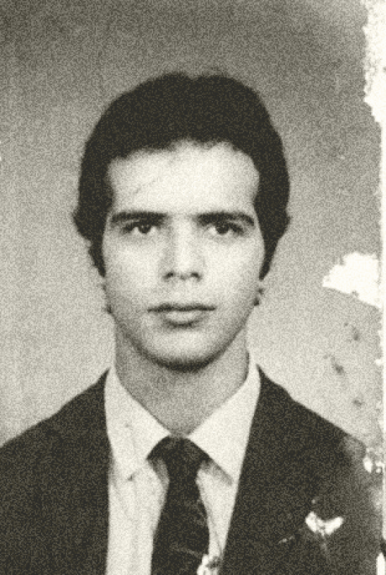
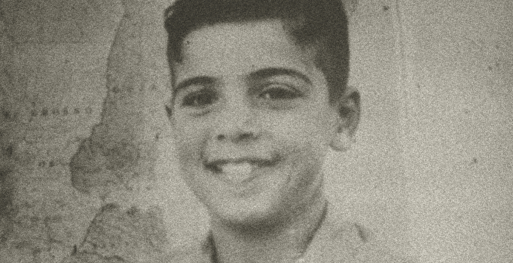
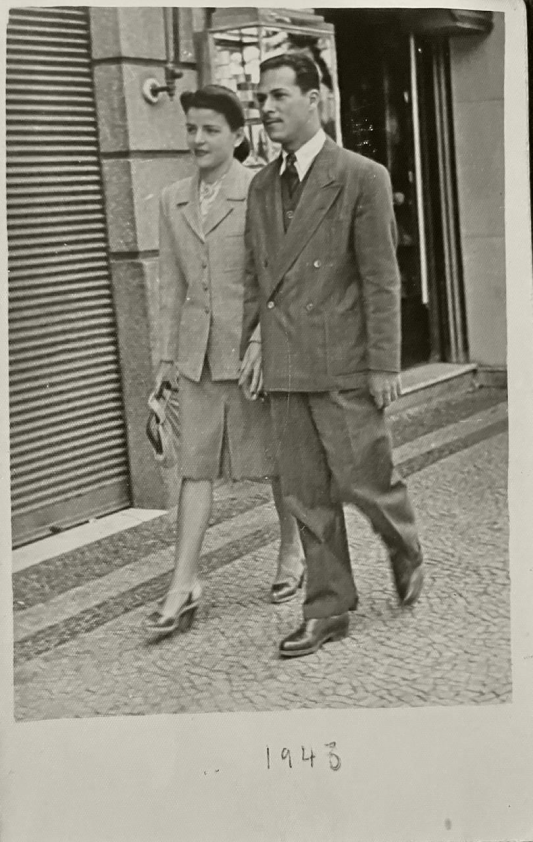
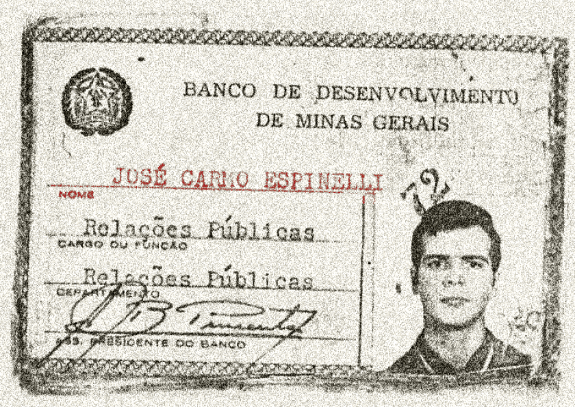
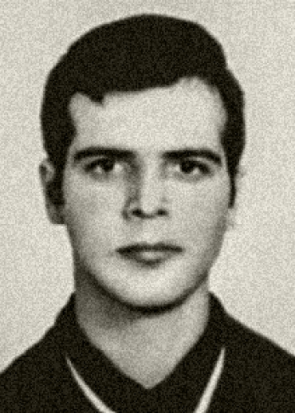
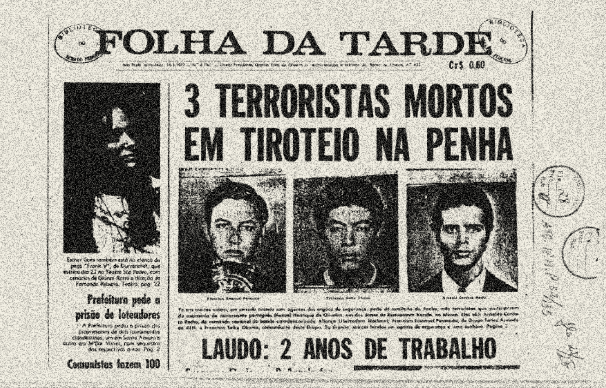

Foto de Arnaldo disponível no Arquivo Nacional
ARNALDO
CARDOSO
ROCHA
Arnaldo nasceu em 28 de março de 1949, em Belo Horizonte, Minas Gerais. Filho de Annette Cardoso Rocha e João de Deus Rocha, cresceu no bairro do Carmo, em uma casa sempre movimentada, ao lado de seus nove irmãos.
“Era filho do Rocha, velho militante comunista e seu referencial de vida; mas sempre apegado à mãe, Anette, que segurava as barras da família: dez filhos, um marido militante e sempre muito serviço na casa cheia para os almoços domingueiros, regados a discussão política e cerveja.”
“Arnaldo era um garoto como muitos de sua idade, só não amava os Beatles e os Rolling Stones e sim o samba e a bossa nova. Adorava dançar, namorar e conversar com os amigos.”

Foto de acervo pessoal. Arnaldo Cardoso Rocha com 10 anos de idade.
Muito cedo ouviu e atendeu ao chamado da luta revolucionária, dando seus primeiros passos no setor secundarista do Partido Comunista Brasileiro, onde seu pai (João de Deus Rocha) já era dirigente. Não chegou a finalizar o segundo grau em decorrência do seu envolvimento com o movimento estudantil a partir do golpe de Estado de 1964.
Deixou o PCB no quadro de dissidências do período, formando em conjunto a outros jovens a Corrente Revolucionária de Minas Gerais, que posteriormente se integrou à Ação Libertadora Nacional (ALN), sob o comando de Carlos Marighella.

Foto de acervo pessoal. Annette Cardoso Rocha e João de Deus Rocha, 1943.

Identidade falsa de Arnaldo Cardoso Rocha.
Em 1969, passou a atuar na clandestinidade, utilizando os codinomes José Carlos Líbano, Pedro Luís Witaker Vidigal e José Carmo Spinelli e pelos apelidos: Giba, Jibóia, Flávio e Roberto.
Arnaldo foi gradualmente assumindo papéis mais importantes na organização, até que, por volta de 1971, passou a integrar o Comando Nacional da ALN.
“As normas de segurança, o manejo das armas, os combates de rua, as fugas aos cercos, a tensão do dia-a-dia da luta. Nada disso o embruteceu. Arnaldo continuava com aquele jeito mineiro de ser, de fala mansa, andar pausado e olhar para além dos belos horizontes. Mesmo nos piores momentos da luta, Arnaldo mantinha um cotidiano de vida familiar: junto com Iara Xavier, faziam a feira aos domingos, assavam o peixe, liam os jornais, ouviam músicas e ele embalava o sonho de ter um filho. Um não, vários. Adorava criança”
Com o aumento da repressão, decidiu deixar o país e seguir para o exterior. No entanto, sua permanência foi breve, pois logo retornou ao Brasil.
Em 1972, recebeu a notícia do assassinato de seu cunhado e comandante, Iuri Xavier. Apesar das ordens expressas do comando no Brasil para que permanecesse fora, comunicou sua decisão de voltar.
De volta ao país, permaneceu algum tempo no Nordeste, onde participou do assalto à Coletoria de Impostos de Bodocó, em Pernambuco. Pouco depois, retornou a São Paulo, em 14 de junho de 1972.

Foto de identidade de Arnaldo.
Arnaldo Cardoso Rocha foi assassinado no dia 15 de março de 1973 na cidade de São Paulo.

Divulgação de morte de Francisco Emmanuel Penteado, Francisco Seiko Okama e Arnaldo Cardoso Rocha pelo Jornal Folha da Tarde.
Segundo a versão oficial divulgada em 16 de março de 1973 no Jornal Folha da Tarde, Arnaldo Cardoso Rocha, Francisco Emmanuel Penteado, Francisco Seiko Okama foram vistos no bairro da Penha, São Paulo, por um carro da polícia que patrulhava a região. Ao receberem voz de prisão, segundo a versão oficial, teriam reagido com tiros.
Essa narrativa foi contestada na década de 80, quando Iara Xavier Pereira e Suzana Keniger Lisbôa iniciaram buscas por informações sobre o caso.
Através da investigação da sua companheira, Iara Xavier, foi descoberto que Arnaldo foi levado vivo para o DOI-CODI/SP, onde teria sido torturado.
Sua família soube de sua morte pela televisão. Ao viajar para São Paulo, conseguiu resgatar o corpo e levá-lo para sepultamento no Cemitério Parque da Colina, em Belo Horizonte. Por determinação das autoridades, o caixão chegou lacrado, e o sepultamento foi realizado sem que pudesse ser aberto.
“Arnaldo viveu com toda intensidade cada minuto de sua curta vida, não vacilou, não hesitou em dar sua vida, deixou um grito de alerta e uma prova de amor e confiança em um Brasil melhor. Assim como ousou enfrentar os militares, ousou sonhar, ser feliz, ter um filho que não chegou a conhecer. Arnaldo deixou, de forma inequívoca, a lição de que vale a pena lutar pela liberdade.”
Os principais agentes mencionados no caso são:
Carlos Alberto Brilhante Ustra, apontado como responsável por seu sequestro e tortura;
João Henrique de Carvalho, identificado como delator;
Isaac Abramovich e Orlando Brandão, responsáveis pela falsificação do laudo necroscópico;
Arnaldo morreu durante o mandato de Emílio Garrastazu Médici.
Apenas em 25 de agosto de 2025, houve a entrega da sua certidão de óbito retificada aos seus familiares.
Texto baseado no Terceiro Volume do Relatório da Comissão Nacional da Verdade e no Requerimento de Iara Xavier para a Comissão de Mortos e Desaparecidos.